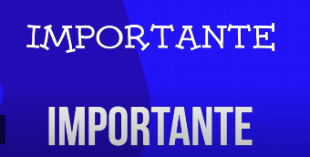
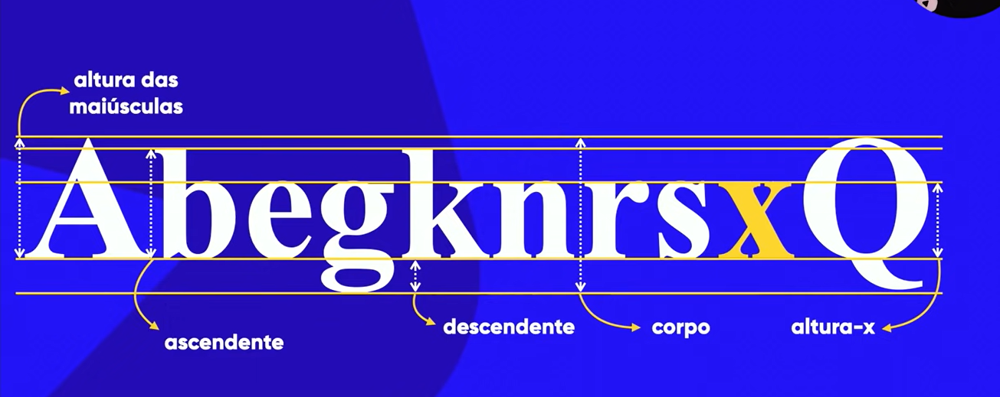
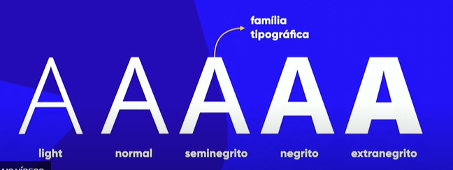
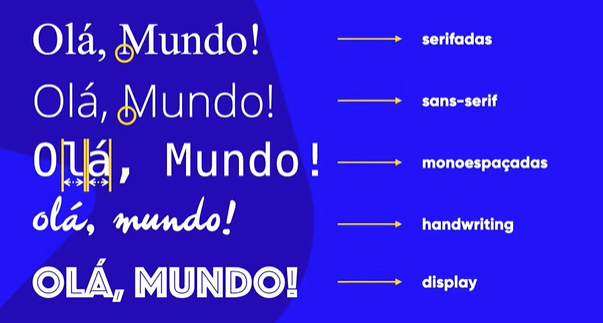

Emoções da Tipografia
História da Tipografia
Prensa mecânica: de Gutemberg ou dos chineses
Século XIV
Com a impressão dos livros pela prensa, surgiu a necessidade de mudar as letras, para serem melhores lidas. Iniciando os Estudos da Tipografia.
Emoções das Tipografias
Qual das fontes é a melhor para a palavra Amor?
A maioria das pessoas responderia a de cima. Pois dá sensação de leve, solto, com alguns sentimento semelhantes ao amor.
Ao contrário do de baixo, que é mais dura, antiga, retrô.
E na palavra Importante?
A de baixo é a mais escolhida, pois a palavra importante representa seriedade, formal, organização.
Já na de cima não,
Clique aqui para ir ao Curso Completo
Anatomia do tipo
Altura das fontes
- Altura x
- Altura máxima das letras minúsculas
- Altura das maiúsculas
- Altura máxima das letras maiúsculas
- Ascendente
- Altura x +altura para cima da letra (ex. b )
- descendente
- Altura da parte de baixo da letra
- Corpo
- O tamanho total da fonte, junção de todos os outros.
O x é usado como base na criação de uma fonte, ele é utilizado como base das letras maiúsculas.
O Q para letras maiúsculas.
Elementos das tipografia
As fontes tem alguns elementos, nem todas as fontes tem todos os elementos.
- haste
- esporão
- vértice
- filete
- arco
- pé
- barriga
- orelha
- cauda
- perna
- braço
- espinha
Família tipográficas
A base de todas é a normal, poucas tem light e extrangrito, e tem algumas que não tem nem negrito.
Categoria tipográficas
- Serifadas
- Tem serifa (pézinho)
- Sans-serif
- Sem serifa
- monoespaçadas
- O espaçamento de todos os grifos (letras) é o mesmo.
- handwriting
- Estilo feito à mão
- display
- Ela não se preocupa em obedecer as regras anatômicas